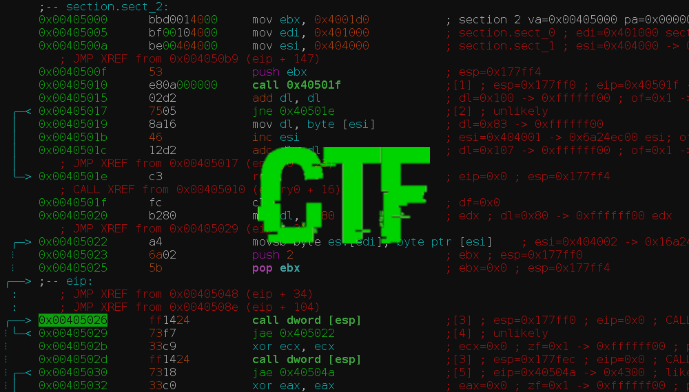
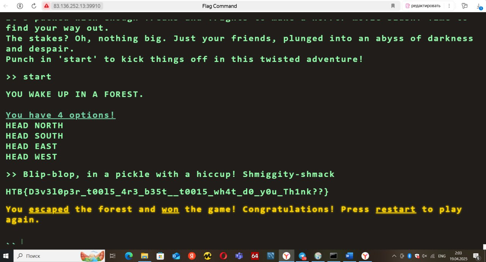
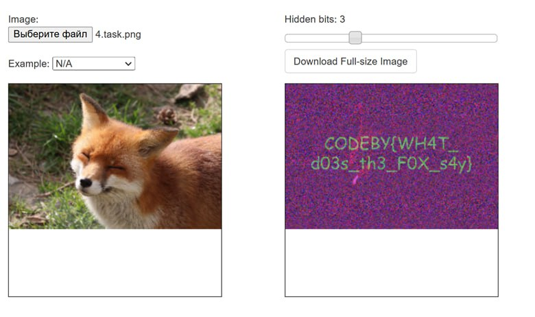
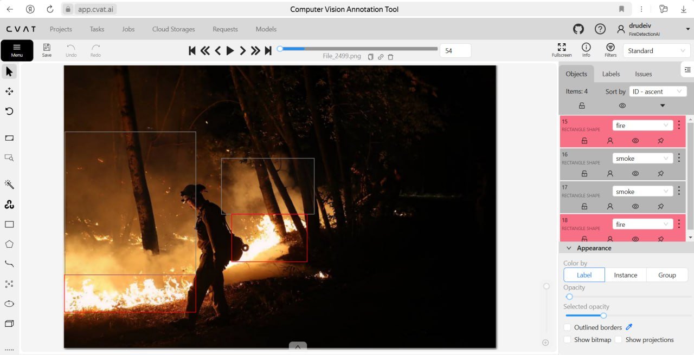

Главная
Capture The Flag (CTF) — это соревнования в области информационной безопасности, где участники решают различные задачи для получения "флагов". Флаг — это секретная строка, которая подтверждает успешное решение задачи. Целью CTF является развитие практических навыков в области информационной безопасности и подготовка к реальным задачам.
О проекте
Этот проект был разработан для студентов, начинающих специалистов в области информационной безопасности. Он охватывает следующие области:
- Веб-безопасность (SQL injection, XSS, CSRF)
- Криптография
- Реверс-инжиниринг
- Сетевая безопасность
- Форензика
Цель: Создание сообщества для тренировки студентов в области кибербезопасности, предоставляющего комплексное обучение как атакующим, так и защитным методам, подготовку профессиональной команды CTF, а также создание платформы для проведения соревнований и других образовательных мероприятий.
Участники
-
Друдэ Ирина Викторовна
Вклад: Изучение нового материала по CTF, решение практических заданий, посещение мероприятий, связанных с информационной безопасностью, отчетность по проделанной работе.
Журнал
Здесь информация о моих достижениях и прогрессе в проекте и вариативной части практики.
Нахождение флага на "Hack The Box"
Интересный опыт работы на сайте HTB, а также применение известных мне методов нахождения флага на практике.
Задача по стеганографии
С помощью различных дополнительных ресурсов смогла научиться обнаруживать флаги, спрятанные в изображениях.
Разметка огня и дыма
Узнала основные критерии разметки, как нейросеть воспринимает то, что мы выделяем за объекты, разметила нужные объекты для обучения нейросети.
Ресурсы
Список полезных ресурсов и материалов для изучения.
Полезные ресурсы по "Проектной деятельности"
- Hack The Box - Онлайн-платформа для улучшения навыков пентестинга и информационной безопасности через практику на реальных (или очень реалистичных) машинах.
- PortSwigger - Предоставляет инструменты и ресурсы для тестирования веб-приложений на безопасность.
- Статьи "HTB" - Общее представление, теория и разбора задач.
- Сайт CTFtime.org - Рейтинг и календарь CTF соревнований.